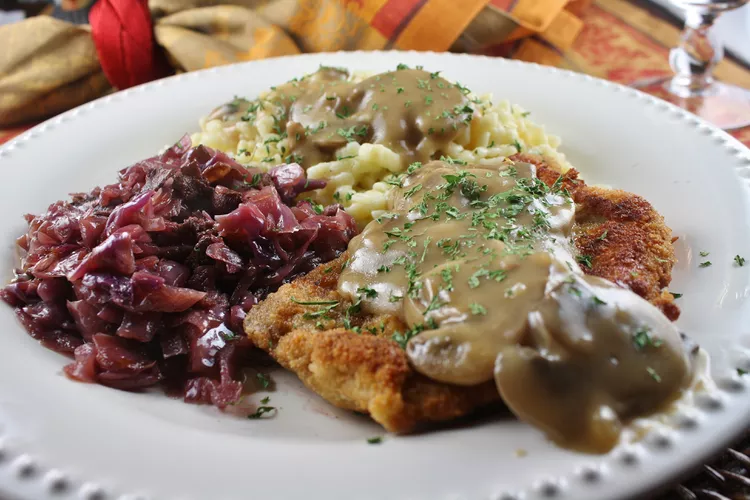

Jaeger Schnitzel
This is wonderful. Breaded and fried cubed pork with mushrooms and hunter gravy over a bed of noodles. Serve with a salad and a hunk of thick crusty bread.

Prep Time: 30 mins
Cook Time: 2 hrs
Total Time: 2 hrs 30 mins
Servings: 8
Yield: 8 servings
Ingredients
- 2 pounds boneless pork chops, cubed
- oil for frying
- 2 eggs, beaten
- plain bread crumbs
- 3 (1 ounce) packages dry mushroom gravy mix
- 1 pound fresh mushrooms, coarsely chopped
- 1 (16 ounce) package dry egg noodles
Directions
- Pound out cubed pork, and cut in half.
- Heat oil in a large skillet or Dutch oven over medium heat. Dip pork in egg, then bread crumbs, and place in hot oil. Cook, turning, until golden brown. Remove to a warm plat
- Prepare gravy mix according to package directions. Stir in mushrooms, and cook with gravy.
- Meanwhile, bring a large pot of lightly salted water to a boil. Add the egg noodles, and cook until al dente, about 8 to 10 minutes; drain.
- Serve pork over noodles and smother with gravy.
Nutrition Facts
Per serving: 455 calories
Total Fat 9g Saturated Fat 3g Cholesterol 169mg Sodium 828mg Total Carbohydrate 54g Dietary Fiber 3g Total Sugars 3g Protein 39g Vitamin C 2mg Calcium 70mg Iron 4mg Potassium 814mg